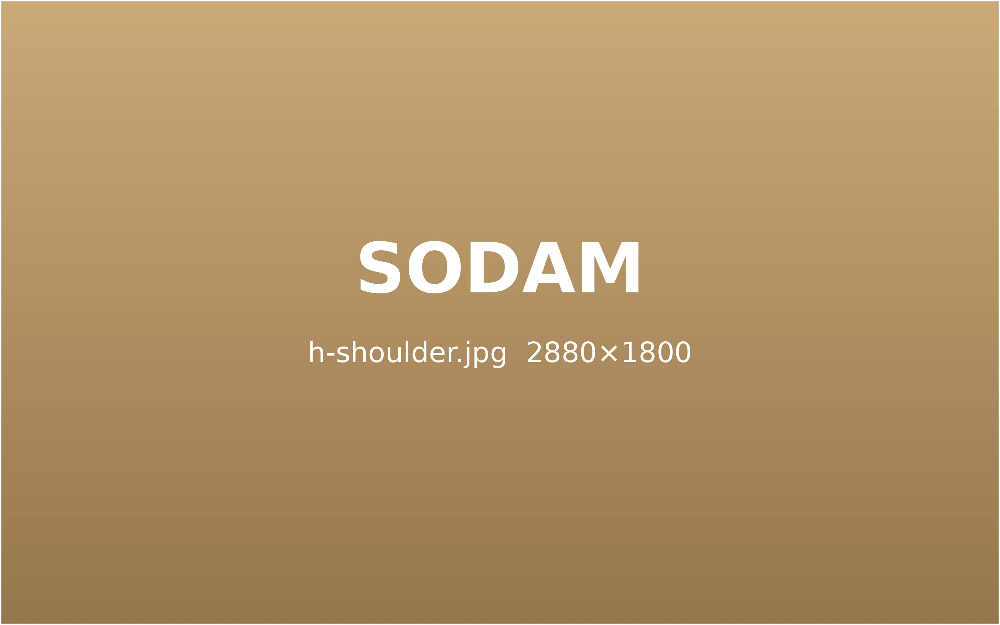
굳은 어깨,
움직임을 되찾는 치료
팔이 올라가지 않거나 밤마다 어깨가 욱신거린다면 관절 안쪽의 문제일 수 있습니다.
초음파로 힘줄과 관절 상태를 확인하고 단계별로 치료합니다.
어깨 통증,
시간이 해결해 주지 않습니다.
"오십견은 저절로 낫는다"는 말과 달리, 방치하면 관절이 굳어 회복 기간이 더 길어질 수 있습니다.
관절을 감싼 주머니가 굳고 좁아져 팔을 어느 방향으로도 올리기 어려워집니다.
야간 통증가동 범위 감소어깨를 돌리는 힘줄이 닳거나 찢어져 특정 각도에서 날카로운 통증이 생깁니다.
팔 들 때 통증근력 저하힘줄 안에 석회가 쌓여 갑자기 심한 통증이 찾아옵니다.
급성 통증초음파로 확인팔을 올릴 때 힘줄이 뼈에 걸리며 통증과 걸리는 느낌이 생깁니다.
특정 각도 통증딸깍 소리
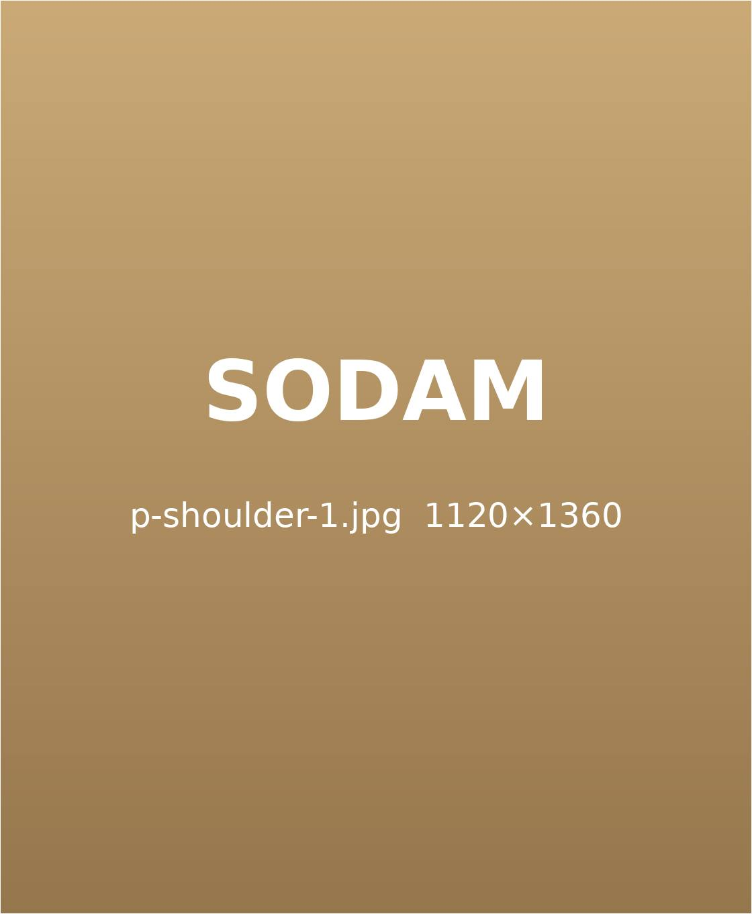
어깨 통증을 부르는 주요 원인
어깨는 운동 범위가 넓은 만큼 다양한 원인으로 아픕니다.
반복 사용팔을 머리 위로 드는 동작을 반복하면 힘줄이 닳습니다.
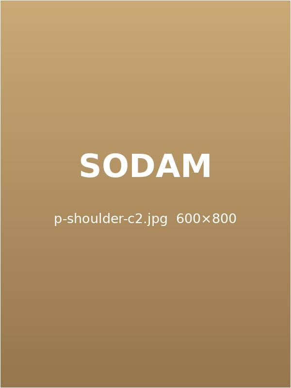
굽은 자세말린 어깨는 관절 공간을 좁힙니다.한쪽 부담한쪽으로만 드는 습관이 균형을 무너뜨립니다.
수면 자세팔을 베고 자는 습관이 혈류를 막습니다.
소담의 어깨 통증 치료 프로그램
굳은 관절은 부드럽게 풀고, 손상된 힘줄은 회복을 돕는 치료를 순서대로 진행합니다.
01구조 및 염증 치료
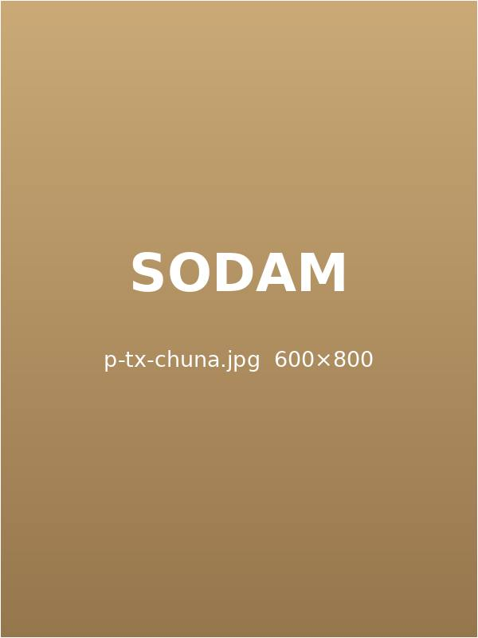
추나 치료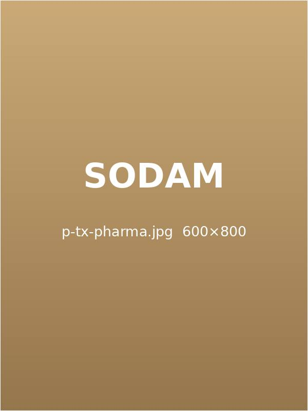
약침 치료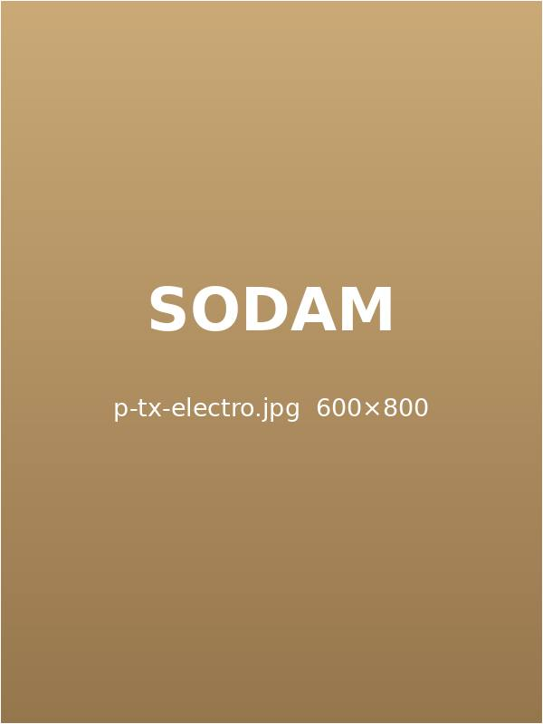
전침 요법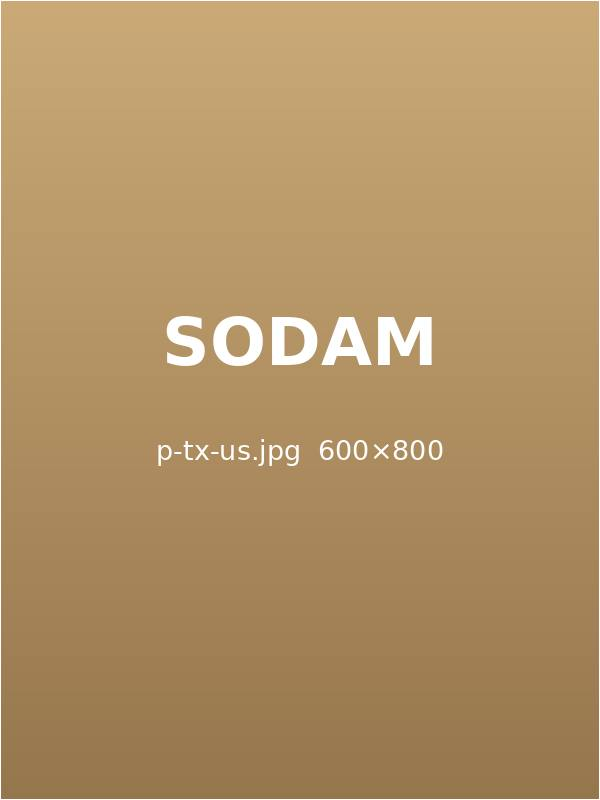
초음파 유도 약침02순환 개선 및 재발 방지
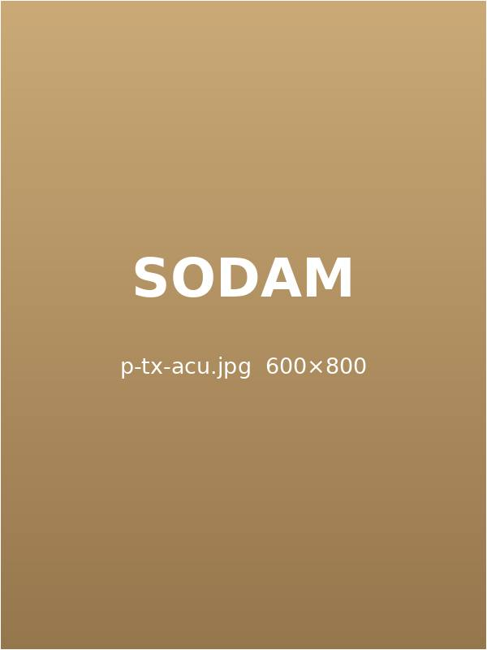
침 치료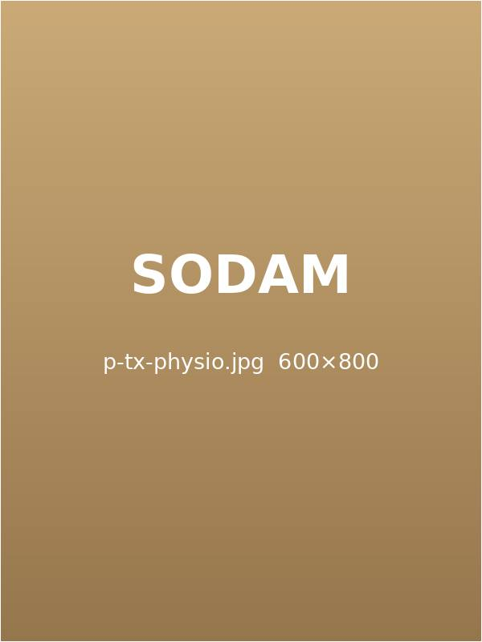
맞춤 물리 치료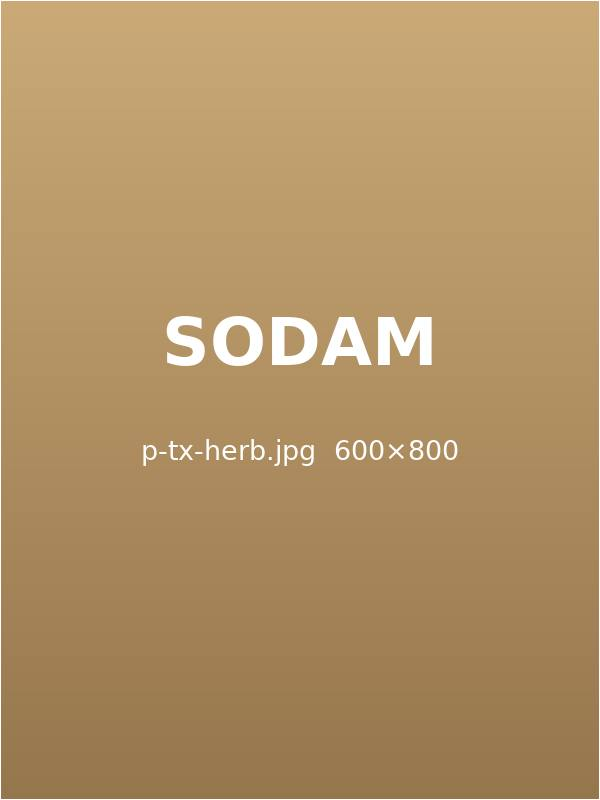
개인 맞춤 한약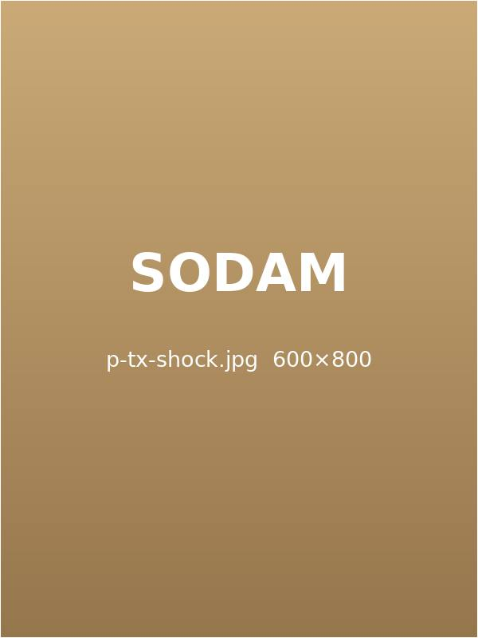
체외충격파정확한 진단이
치료의 방향을 정합니다.
눈에 보이는 통증보다 그 뒤의 원인을 먼저 찾습니다.
STEP 1
한의학적 종합 진단
맥진 · 설진과 함께 통증이 시작된 시기, 생활 패턴을 자세히 묻고 몸 전체의 균형을 살핍니다.
맥 · 설 진단생활 습관 문진

STEP 2
정밀 문진 · 체형 검사
자세와 관절 가동 범위를 측정해 어느 부위가 굳고 어느 부위가 약해졌는지 기록합니다.
체형 분석가동 범위 측정

STEP 3
초음파 · 영상 자료 판독
근골격 초음파로 근육과 인대 상태를 직접 보고, 가져오신 MRI · X-ray 자료와 함께 판독합니다.
근골격 초음파영상 자료 판독